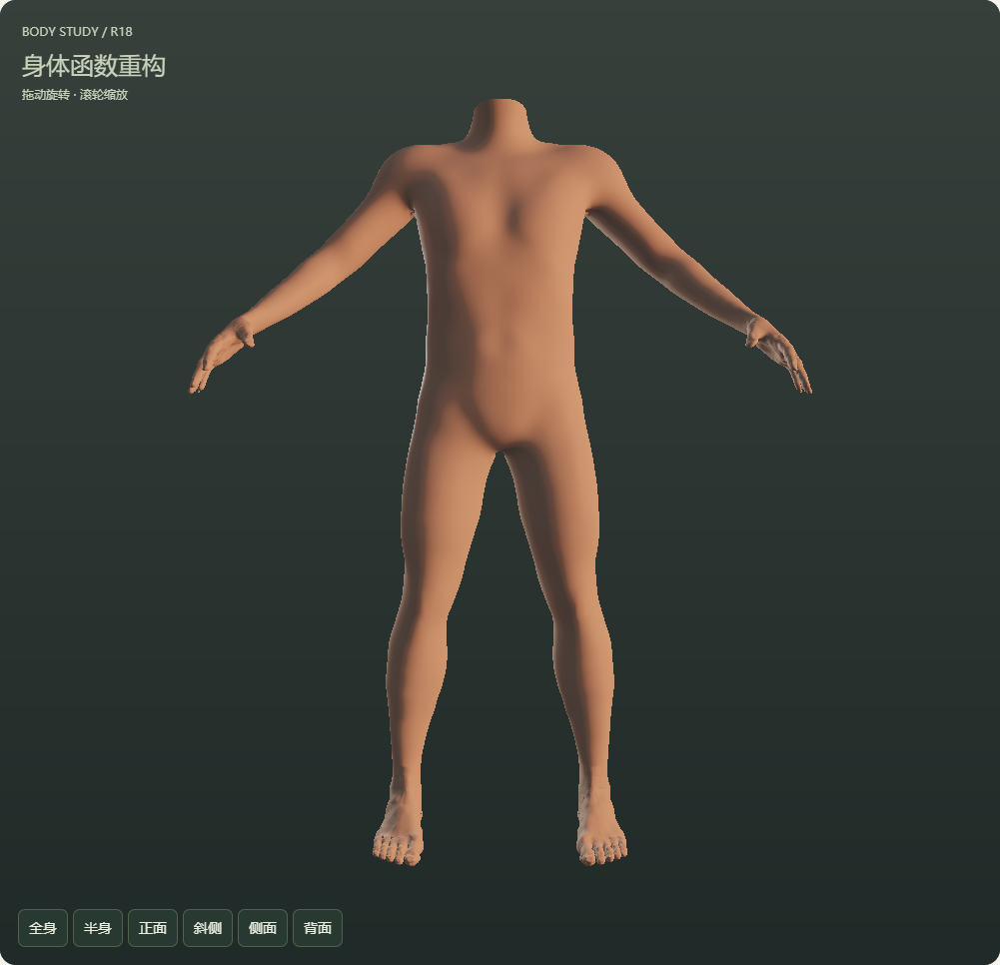
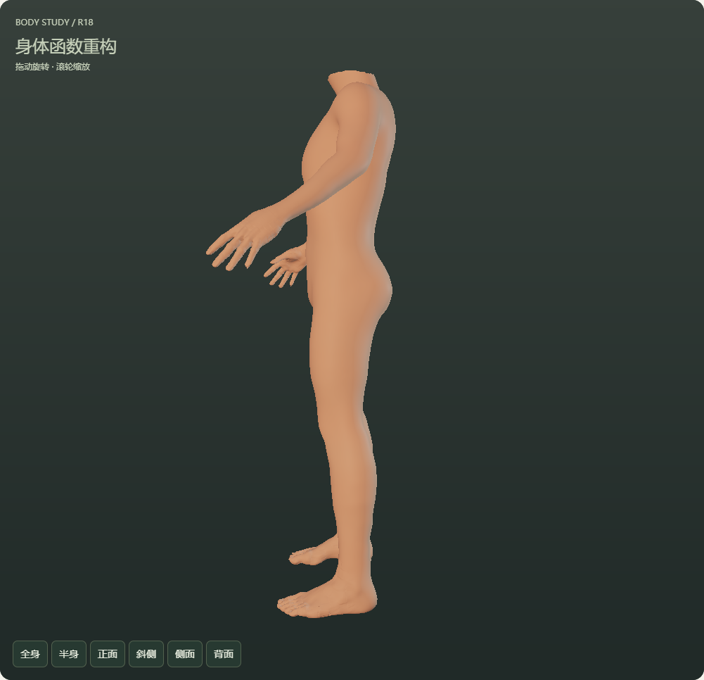
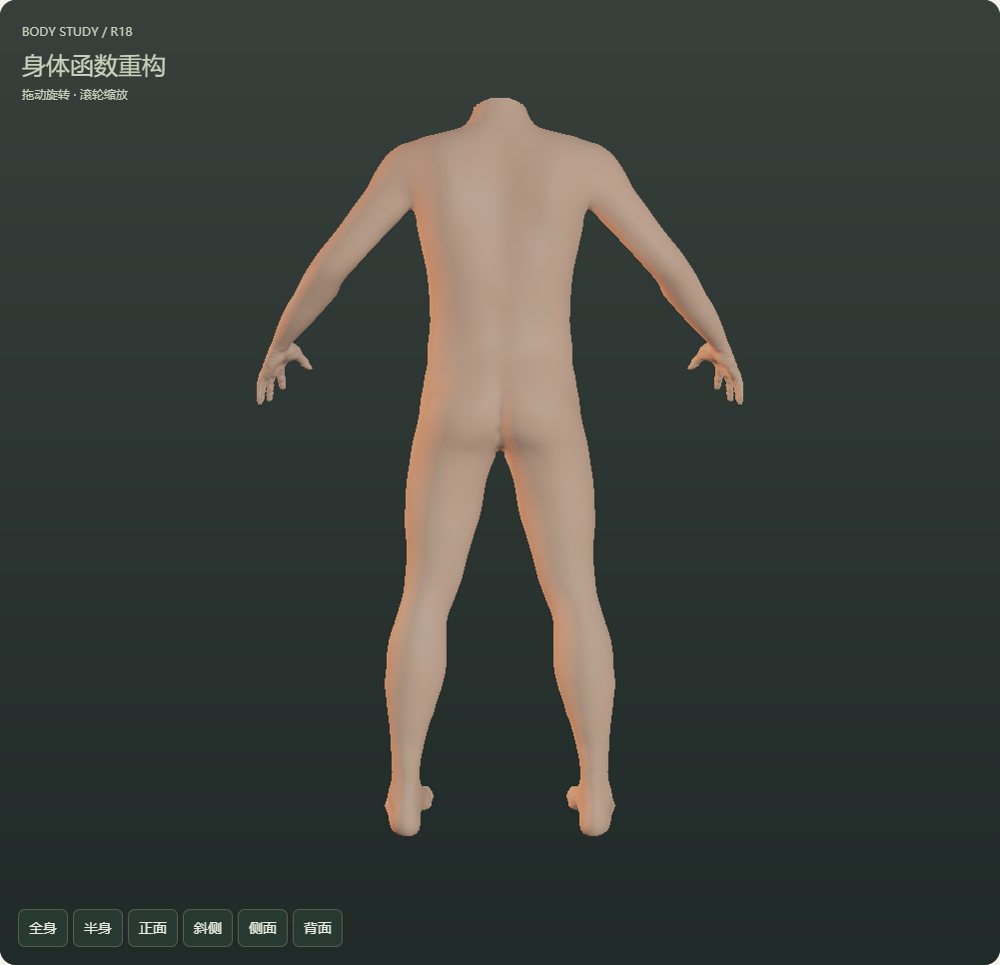
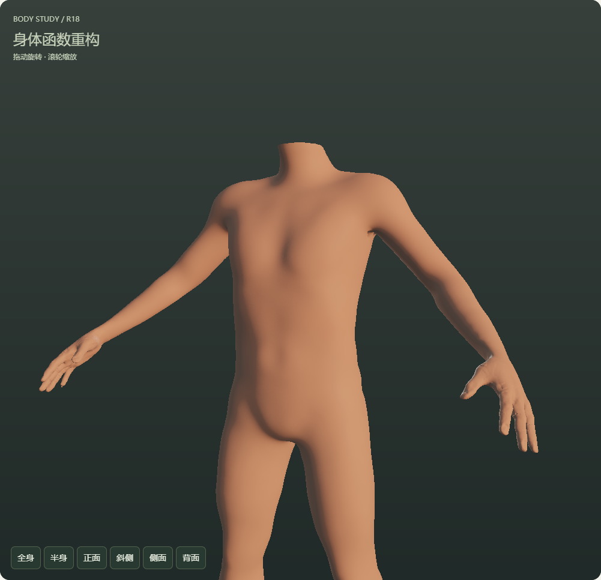
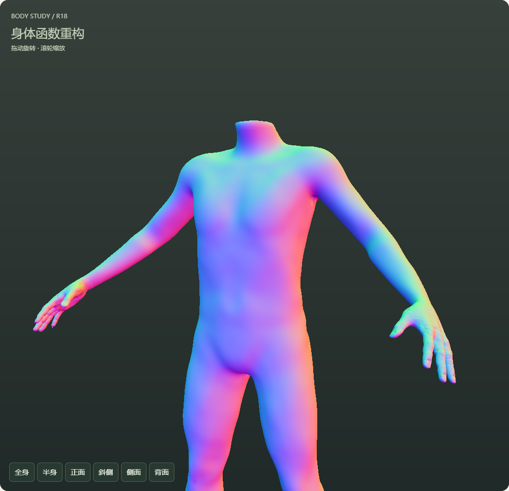

HUMAN / BODY / R18先分清支撑，再看体量与结构。
本轮按R17路线的第一优先级，建立成人校准档、分离软组织与动画支撑，并加入限定躯干的大体积函数。R17原人物、旧档和完整参数保留。
打开 R18 可操作三维身体 · R17 对照 · 实现、尺度与未完成项
本轮已落地：校准档、体量/支撑分离、局部躯干函数、几何法线诊断和完整存档。
仍未通过最终视觉验收：胸肩与背腰层次仍较概括，肩腋、手足和腕部仍需后续处理。整体身体重构、自主母体和总平台整合没有完成。
同一规则下的正常距离实拍

正面全身
侧面全身
背面全身
半身实拍：检查胸廓、腰腹和骨盆；不是贴肤特写。分开检查结构与着色
同一校准档：躯干函数强度为0。同一校准档：躯干函数强度为1，有限支持保护头颈和四肢。几何法线着色：保留同一灯光及表面配置。
几何梯度方向：用于检查隐式形体，不代表最终肤质。 可核对的结果
| 项目 | 本轮结果与限制 |
|---|
| 参数与支撑 | 1916项目录、965项身体控制、34对左右联动保留。两套驱动的被测总体/局部软组织变化不改变静止绑定支撑；身高、比例仍可主动修改支撑。这是动画参考，不是真实骨长测量。 |
| 实现检查 | 21项数值检查、13项浏览器检查，38张当前版本截图。R17原人物四个视图的实际画布像素对照通过。 |
| 实际显示与存档 | 实际绘制只用点图元；没有人物三角面。真实下载、旧档载入和同档重复载入通过，头部变量保留。页面实际运行没有外部请求。 |
| 来源和完整度 | 局部体积函数由项目编写；基础形态、绑定权重和采样仍保留原来源。没有宣称全范围形体/动作或全部自主数据已完成。 |
后续顺序
继续检查胸廓肩带、腰腹与骨盆，尤其背面和肩腋过渡；这层稳定后再处理关节、手足和更多动作，然后逐区替换母体数据。局部计算、微观表面和头部整合仍按R17路线排在后面。
当前运行文件 SHA256：be2e48abeefa870d3f3222db3a2d01e354eaa22d0a7b81a1bd1fbc697421e9c7
实际截图完成：2026-10-23T08:25:40.433Z
检查记录：qa/calibration-r18/browser.json；源码与交付由 BUILD-R18.json 逐项核对。第一轮被替换候选的检查与失败说明保留在 qa/calibration-r18-trial1/。